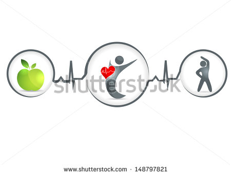

Environmental
Environmental Wellness
is about creating a safe, supportive, inclusive and sustainable community that recognizes the impact of personal and social environmental decisions.
Examples of Environmental Wellness:
- Being respectful, inclusive, kind and supportive to others
- Being aware of risks in your surroundings
- Being aware of the impact of your decisions
- Taking personal responsibility for your actions
- Working to improve your community
- Reducing, reusing & recycling
- Using sustainable transportation

Strategies to Enhance Your Environmental Wellness
- Surround yourself by supportive family, friends, and resources
- Form study groups with peers and support each other with course work and assignments
- Make an attempt to meet your professors in office hours, advisors, and other learning resources
- Spend time with friends and family
Be cautious about your personal security when drinking and out with friends:
- Be aware of who is around you and leave with the same people you came with
- Buy your own drinks and keep your drink in sight at all times
- Keep condoms and other contraception with you when you go out
Live an eco-friendly lifestyle on a daily basis:
- Use transit and leave your car at home when you can
- Recycle plastic, paper and glass containers
- Print less, try reading online or sharing reading materials with classmates
Eat locally produced food:
- Visit the SFU Pocket Farmer's Market
- Try to purchase food and beverages that are grown and produced locally as an alternative to imported products